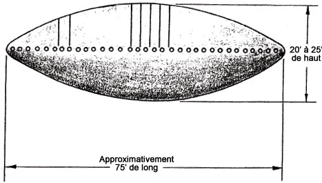

L'importance du problème a dicté une 2de approche, si les résultats statistiques ne se révélaient pas concluants. Il
a été décidé qu'une tentative serait faite pour décrire l'apparence physique, les caractéristiques de vol et d'autres
attributs (c'est-à-dire, construire un modèle) d'une classe ou de classes de "soucoupes volantes".
En préparation de cette tentative, une réévaluation des inconnus a été nécessaire. Cette réévaluation a été
accomplie par un panel composé uniquement de personnes auparavant associées au travail. En exploitant l'ensemble des
rapports d'inconnus disponibles à l'ATIC, le panel a procédé
à une étude attentive des rapports d'observations inconnus dans les groupes d'angle d'élévation du soleil 1,
2, 3, 6 et 7 - ces groupes pour lesquels le soleil était soit au-dessus de l'horizon ou à moins de 10 ° d'élévation
sous l'horizon.
Cette étude a eut 2 objectifs. Le 1er a été de déterminer, avec des informations supplémentaires telles que l'angle
d'élévation du soleil, combien d'inconnus pourraient être attribués à des phénomènes connus. Le 2d a été
d'obtenir les inconnus qui avaient été décrits avec des détails insuffisants et qui pourraient être exploités
pour construire un modèle ou des modèles de "soucoupes volantes".
Il a été décidé de placer tous les inconnus qui pourraient être des phénomènes connus dans une catégorie de
"connus possible" pour dénoter le niveau de confiance légèrement inférieur qui pourrait être attribué à ces
nouvelles évaluations. Les inconnus, avec une description suffisamment détaillée seraient appelés "bons
inconnus", tandis que les restants seraient simplement appelés inconnus. 164 dossiers sur un total de
186 observations d'objets dans les groupes 1, 2, 3, 6 et 7 ont été examinés. Il y avait 18 appareils possibles, 20 ballons possibles, 7 bons inconnus, 100 inconnus
et 19 autres qui furent identifiés comme étant des connus possibles de types divers. Il est intéressant de
noter que 2 de ceux-ci étaient établis comme étant de faux soleils sur la base de l'angle d'élévation du soleil et de
l'angle d'orientation du soleil, ainsi que de la direction d'objet depuis l'observateur. De plus, les inconnus dans
les groupes d'angle d'élévation du soleil 4 et 5 (observations de nuit) furent scrutés sans tentative
d'identification, mais pour trouver tous "bons inconnus" possibles. Il y eut 5 observations qui pouvaient
être placées dans cette catégorie.
Sur les inconnus, il y eut approximativement 20 observations qui furent observées d'une manière telle
qu'elles auraient dû être reconnues facilement si elles avaient été des objets familiers, c'est-à-dire, qu'il y avait
peu de possibilité que leurs formes, telles qu'observées, puissent avoir été déformées suffisamment par une cause ou
une autre pour les rendre non reconnaissables. Il y en avait très peu qui auraient été identifiées comme des missiles
guidés ou des fusées, mais qui ne furent pas identifiés comme tels en raison de la localisation géographique à
laquelle ils avaient été vus.
L'ensemble des inconnus restants ont été classés comme tels seulement parce qu'ils avaient été décrits comme
ayant réalisé des manœuvres qui ne pouvaient être attribuées à des objets connus. Dans ces cas, la forme pourrait
aussi être non reconnaissable, mais il a été considéré que c'était en raison de la distortion et de la distance, ou en
raison de l'obscurité.
Ceci est un point très important. Pour le placer différemment, si ces inconnus, qui représentent toutes observations
inconnues sauf 40, avaient été décrits comme ayant réalisé des manœuvres qui pourraient être attribuées à des
phénomènes connus, ils auraient probablement été identifiés comme connus. À l'exception de certaines
observations radar, l'ensemble de ces manœuvres ont
été observées visuellement. Les possibilités d'imprécisions sont grandes en raison de l'incapacité d'un observateur à
estimer visuellement les taille, distance, et vitesse.
Les rapports d'observations par radar concernaient
généralement des objets à haute vitesse, certaines à des altitudes extrêmement élevées. Certains furent identifiés
comme inconnus car il n'y avait pas d'objet à voir visuellement au point indiqué par le dispositif radar. On ne peut dire avec quelque assurance ce
que ces observations radar signifient, mais
l'explication la plus logique est qu'il s'agisse de cibles au sol réfléchies par une couche atmosphérique d'inversion
de température. Il est considéré que les observations radar
dans cette étude ne sont pas significatives à moins qu'une observation visuelle de l'objet soit êgalement faite.
Prise en conjonction avec les Tests du Chi2 discutés précédemment, les résultats de la réévaluation des
rapports identifiés comme observations inconnues sembleraient indiquer que la majorité d'entre eux aurait
facilement pu être des objets familiers. Cependant, la résolution de cette question avec quelque degré de certitude
semble être impossible.
Ainsi, sur les 434 observations d'objets qui furent identifiés comme inconnus par le processus de
réduction de données, il y en a seulement 12 de décrites avec suffisamment de détails pour qu'elles puissent être
utilisées pour tenter de dériver un modèle de "soucoupe volante". Ce qui suit est un résumé des 12 bonnes observations
d'inconnus :
Cas 1
2 hommes employés par une société de nettoyage de tapis conduisaient le long d'un pont , lorsqu'ils virent un objet glisser à travers la route à quelques centaines de pieds devant eux. Il
était brillant et de construction métallique, d'environ 6pieds à 8pieds de long et 2pieds de large. Il était sur une trajectoire de
glissement plat à une altitude d'environ 30pieds et dans un virage modéré vers la gauche. Il fut
observé pendant seulement quelques secondes et plongea apparemment dans la zone boisée, bien que l'on en trouva
aucune trace N° série 0573.00.
Cas 2
Une éleve de l'aviation navale, sa femme et plusieurs autres se trouvaient à un film drive-in ,
durant lequel ils virent plusieurs groupes d'objets voler au-dessus d'eux. Ils étaient de 2 à 9 objets dans un
groupe et il y avait environ 20 groupes. Les groupes d'objets volaient en ligne droite à l'exception de certains
changements de direction accomplis d'une manière semblable à n'importe quel autre virage d'appareil.
Les objets avaient la forme d'appareils conventionnels. La caractéristique inexplicable des objets était que chacun
d'entre eux avait une lueur rouge les entourant et luisaient eux-mêmes, bien qu'il s'agisse d'une nuit sans nuages
N° série 4508.00.
Cas 3 (numéros de série 2013.00, 2014.00 et 2014.01)
2 opérateur de tour observèrent une lumière au-dessus d'un aéroport de ville .
Comme un avion commercial décollait à ce moment, on demanda aux pilotes d'enquêter sur cette lumière. Ils
l'observèrent à 20 h 26. D'après eux, elle volait à leur côté sur un rayon plus grand alors qu'ils faisaient leur
virage ascensionnel, durant lequel elle fit clignoter des lumières qui ressemblaient à des feux de fonctionnement.
Alors que l'avion observateur était toujours dans son virage ascensionnel, l'objet fit un virage vers l'avion et
passa devant son nez. Alors que les 2 hommes tournaient leur tête pour la regarder, elle apparût instantanément sur
leur autre côté voyant dans la même direction dans laquelle ils volaient, et elle glissa sous
eux et ils ne la virent plus. La durée totale de l'observation n'a pas été indiquée. En apparence, c'était comme un
avion avec un corps en forme de cigare et des ailes droites, quelque peu plus grand qu'un B-29. Aucune nacelle de
moteur ne fut observée sur les ailes.
Cas 4 (numéro de série 4599.00)
Un fermier à mi-temps et une aide embauchée were curing du tabac , lorsqu'ils
regardèrent en haut et virent 2 objets en forme de cigare. Un stationnait tandis que l'autre se déplaça vers l'est
et revint, moment auquel les 2 montèrent jusqu'à être perdu de vue. La durée de l'observation fut de
. Tous 2 avaient un échappement à une extrémité et aucun n'avait de projections de quelque type
que ce soit. Il fut indiqué qu'ils semblaient être transparents et illuminés de l'intérieur.
Cas 5 (numéros de série 0565.00 à 0565.03)
Un pilote et un copilote pilotaient un DC-3 , lorsqu'ils virent un objet venant vers eux. Il passa sur la droite et légèrement au-dessus d'eux,
moment auquel il partit dans une ascension en pente raide et fut perdu de vue dans des nuages. La durée de l'observation fut d'environ 10 s.
1 passager put capter un éclair de lumière alors que l'objet passait. L'objet semblait propulsé ar des moteurs de
fusée ou à réaction tirant une traînée de feu à quelques 50pieds à l'arrière de l'objet. L'objet n'avait pas
d'ailes ou autre protrusion et avait 2 rangées de fenêtres éclairées.
Cas 6 (numéro de série 4822.00)
Un technicien en instruments, alors qu'il conduisait depuis une grande ville vers une base aérienne , vit un objet depuis sa voiture. Il arrêta sa voiture pour le regarder. L'objet se déplaça soudain vers
le zénith en jaillissements de droite à gauche à un angle d'environ 45 °. Puis se déplaça au loin en vol horizontal
avec à grande vitesse, manœuvre durant laquelle il apparut blanc la plupart du temps, mais roula apparemment 3 fois,
montrant un côté rouge. À environ la mi-chemin de son rouleau, il ne montrait aucune lumière. Il tint finalement une
position au sud de la planète Jupiter à haute altitude, position à laquelle il dardait en arrière et en avant, à
gauche et à droite alternativement. Le temps total d'observation fut de . Apparemment,
l'observateur avait juste arrêté de regarder l'objet.
Cas 7 (numéro de série 2728.00)
Un sergent aviateur vit un objet au-dessus d'une base de l'Air Force en Corée . L'objet volait selon une série d'actions de rotation et culbute. Il était sur une trajectoire
erratique, volant d'abord horizontalement, puis stoppant momentanément, fonçant droit vers le haut, volant
horizontalement et culbutant à nouveau, puis changeant de course et disparaissant dans le soleil. Il réapparut et
fut vu volant en arrière et en avant devant le soleil. À un moment un F-86 passa entre l'observateur et l'objet. Il le fit remarquer à
un autre homme qui le vit manœuvrer près du soleil.
Cas 8 (numéro de série 0576.00)
Un électricien se tenait près de la fenêtre de la salle de bain de chez lui, faisant face à l'ouest, à , lorsqu'il remarqua pour la 1ère fois un objet. Il courut à sa cuisine où il montra l'objet
à sa femme. Le temps total d'observation fut approximativement de 10 s, durant lequel l'objet volait selon une
trajectoire droite et horizontale d'horizon en horizon, d'ouest en est.
Cas 9 (numéro de série 0066.00)
Un fermier et ses 2 garçons, âgés de 8 et 10 ans, se trouvaient à son camp de pêche . Il partit chercher les garçons, les ayant envoyés à la rivière pour chercher une bande de son bateau.
Il remarqua un objet à quelques 300pieds de distance, à 75pieds au-dessus du sol. Il le vit devant le paysage du
mur de canyon qui faisait 400pieds de haut en ce point. Il faisait des sauts de haie,
suivant le contour du sol, était bleu ciel, faisant environ 20pieds de diamètre et 10pieds d'épaisseur et avait des pieds sur le côté d'où
des flammes sortaient. Il faisait un son [swishing]. L'observateur indiqua que les arbres étaient très agités par
l'appareil alors qu'il passait au-dessus. Ses 2 fils observèrent également l'objet. Aucun ne vit l'objet plus de
quelques secondes.
Cas 10
Un employé du laboratoire supersonique d'un laboratoire aéronautique et d'autres employés de ce labo se trouvaient
près d'une rivière, à 2.5miles de son embouchure, lorsqu'ils virent un objet.
C'était . L'objet réfléchissait la lumière du soleil lorsqu'on l'observait à l'œil
nu. Cependant, il le regarda alors avec des jumelles x8, moment auquel il n'y avait aucune lueur (les verres
avaient-ils un filtre ?). Il était de facture métallique et fut vu avec une résolution suffisamment bonne pour
montrer que la peau était sale. Il se déplaçait en vol horizontal à une vitesse augmentant progressivement, jusqu'à
ce qu'il semble approcher la vitesse d'un jet avant de disparaître. Aucune propulsion n'était apparente. La durée de
l'observation fut de N° série 1119.00.
Cas 11
, un capitaine de réserve de l'Air Force et un capitaine pilote de ligne pilotaient
un vol de ligne aérienne commerciale, quand le capitaine pilote de ligne attira l'attention du capitaine de réserve
de l'Air Force sur un objet qui volait apparemment à grande vitesse, approchant l'avion de ligne depuis le sud,
selon une direction nord. Le capitaine de réserve de l'Air Force focalisa son attention sur l'objet. Les 2 membres
de l'équipage le regardèrent alors qu'il passait devant eux et partit hors de vue sur la droite. L'observation, qui
dura entre , eut lieu à 15miles au nord d'une ville de taille moyenne. Lorsque
l'objet passa en face de l'avion de ligne, il n'était pas à plus de 0.5miles de distance et à une altitude d'environ 1000pieds au-dessus de l'avion de ligne.
L'objet semblait être circulaire, avec un diamètre d'approximativement 100pieds et avec une hauteur verticale considérablement
inférieure au diamètre, donnant à l'objet une forme semblable à un disque. Au centre du sommet se trouvait une
lumière qui clignotait à une fréquence estimée de 3 éclairs/s. Cette lumière était si brillante qu'il aurait été
impossible de la regarder de manière continue si elle n'avait pas été clignotante. Cette lumière pouvait être vue
seulement lorsque l'objet approchait et après qu'elle a dépassé l'avion de ligne. Lorsque l'objet passa devant les
observateurs, la face inférieure fut visible. La face inférieure sembla avoir 9 à 12 ouvertures ovales ou
circulaires symmétriques situées sur un cercle à approximativement 3/4 de la distance du centre au bord extérieur. À
travers ces ouvertures sortait une lumière pourpre douce dans la nuance des feux fluorescent d'appareils. L'objet
voyageait selon une ligne droite sans tourner. En considérant la visibilité, la durée pendant laquelle l'objet fut
observé et la distance de l'objet, le capitaine de réserve de l'Air estima la vitesse comme dépassant 1000milesN° série 1550.00.
Cas 12 (numéro de série 3601.00)

, un musicien pour une station de radio roulait vers son travail depuis chez lui
lorsqu'il remarqua un objet stationnant environ 10pieds au-dessus d'un champ près de la route le long de
laquelle il conduisait. Alors qu'il arrivait à la hauteur de l'objet, il arrêta sa voiture et sortit pour voir.
Ayant une jambe artificielle, il ne put quitter la route, le terrain environnant étant rude. Cependant, il se
trouvait à moins de 100 yards environ de lui au point où il se trouvait sur la route. L'objet n'était pas absolument
immobile, mais semblait basculer légèrement alors qu'il stationnait. Lorsqu'il coupa le moteur de sa voiture, il put
entendre un profond son palpitant venant de l'objet. Alors qu'il sortait de la voiture, l'objet entâma une ascension
verticale avec un son semblable à un grand convoi de cailles prenant leur envol en même temps. L'objet grimpa
verticalement à travers les nuages brisés juqu'à être perdu de vue. Sa vision ne fut pas obscurcie par des nuages. L'observateur indique que la végetation
fut soufflée par l'objet lorsqu'il était près du sol.
La description de l'objet est comme suit :
Il faisait 75pieds de long environ, 45pieds de large et 15pieds d'épaisseur, à la forme comme 2 plateaux de viande
ovales mis ensembles. Il était de couleur aluminum mat et avait une surface douce. Une lumière continue
medium-bleue brillait à travers la fenêtre de la section avant. La tête et les épaules d'un homme, assis sans
bouger, faisant face au bord avant de l'objet, étaient visibles. Dans la section centrale de l'objet se trouvaient
plusieurs fenêtres s'étendant du bord haut au bord fear de l'objet ; la section centrale de l'objet avait une
lumière bleue qui changeait progressivement en des teintes differentes. Il y avait beaucoup activité et de
mouvement dans la section centrale qui ne pouvait être identifiée comme étant humaine ou mécanique, bien qu'elle
n'avait pas de schéma de mouvement régulier. Il n'y avait pas de fenêtres, portes ou ouvertures, passages,
coutûures, etc., visibles de l'observateur dans la section arrière de l'objet ou sous l'objet (vu au moment de son
ascension). Une autre caractéristique identifiable fut une série de propulseurs de 6miles à 12miles de diamètre rapprochés les uns des autres le long
du bord externe de l'objet. Ces propulseurs étaient montés sur une bracket de sorte qu'ils tournaient dans un plan
horizontal le long du bord de l'objet. Les propulseurs tournaient à grande vitesse.
L'investigation de la zone peu après montra des indices de végétation ayant été soufflée autour. Un examen
d'échantillons recueillis d'herbe et de sol n'indiqua rien d'anormal. La fiabilité de l'observateur a été considérée
comme bonne.
Ces 12 observations peuvent être classées en 4 catégories sur la base de leurs formes, comme suit :
Forme de propulseur - Cas 1
Forme d'appareil - Cas 2 et 3
Forme de cigare - Cases 4 et 5
Forme elliptique ou de disque - Cas 6 et 7
Le critère pour choisir les observations ci-dessus a été que leurs descriptions étaient données avec suffisamment de
détails pour permettre de dessiner des diagrammes des objets. On pourrait noter ici que dans tous les cas sauf 1 (le
cas 11) l'observateur avait déjà dessiné un diagramme de ce qu'il avait vu.
L'objectif de cette section de l'étude a été de concevoir un modèle ou des modèles. Le besoin que la description soit
détaillée est important et a été le plus facile à déterminer dans le programme de réévaluation. Cependant, un bon
modèle devrait tout aussi bien satisfaire les conditions suivantes :
La forme générale de l'objet et les manœuvres qu'il a réalisées devrait correspondre aux rapports de nombre des
inconnus et ainsi les expliquer.
L'observateur et le rapport devraient être fiables.
Le rapport devrait contenir des éléments qui devraient avoir été observés avec précision, et qui élimine la
possibilité que l'observation puisse être attribuée à un objet familier ou à un phénomène naturel connu.
Le modèle devrait être dérivé de 2 bons inconnus ou plus entre lesquels il n'y a pas de conflit
essentiel.
Il peut être montré qu'il n'est pas possible de déduire un modèle d'après les 12 cas qui satisfera l'ensemble de ces
conditions. La discussion cas-par-cas qui suit des 12 bons inconnus illustrera ce point :
Le Cas 1 ne satisfait pas les Conditions 1 et 4. La forme rapportée de cet objet n'est dupliquée par aucun des
autres inconnus.
Le Cas 2 ne satisfait pas les Conditions 1 et 3. Il y a très peu d'inconnus dans la classification de
forme d'appareil. De plus, la caractéristique inhabituelle de cette
observation (i. e., la lueur rouge) pourrait avoir été le reflet de lumières de Flint des objets s'il s'agissait
d'oiseaux ou d'appareils.
Le Cas 3 ne satisfait pas la Condition 1. Il ne satisfait pas non plus la Condition 4 lorsque le Cas 2 est éliminé
comme bon inconnu.
Le Cas 4 ne satisfait pas les Conditions 1 ou 2. Il y a peu d'objets en forme de cigare ou en forme de fusée
rapportés dans la littérature. De plus, cet observateur n'est pas considéré comme étant techniquement bien qualifié.
Le Cas 5 ne satisfait pas la Condition 1. Il ne satisfait pas non plus la Condition 4 lorsque le Cas 4 est éliminé
comme bon inconnu.
On pourrait arguer ici que nombre des inconnus pourraient en fait avoir des formes semblables à celles de
bons inconnus. On notera, cependant, que chacun de ces 5 cas ne satisfait pas 1 des 3 autres conditions.
Le Cas 6 ne satisfait pas la Condition 2. Dans la description de l'objet, il a été indiqué qu'à certains moments
il n'y avait pas de lumière vue de l'objet. Apparemment, la "bande sans lumière", telle que représentée sur le
diagramme de l'observateur, était une tentative d'expliquer cela. Cependant, si l'objet était construit tel que
montré dans le diagramme, la lumière devrait avoir été vue à tout moment. En raison de ce conflit le dessin n'est
pas considéré comme fiale, et sans le dessin, il n'y a pas suffisamment de détail dans la description pour la rendre
utile pour cette étude.
Le Cas 7 viole les Conditions 1 et 4. Bien que la forme soit celle d'un disque, les manœuvres réalisées par
l'objet sont uniques au sein des inconnus et parmi les bons inconnus.
Les Cas 8 à 12 satisfont les Conditions 1 à 3, mais ne satisfont pas la Condition 4. Les caractéristiques qui les
rendent différents les uns des autres sont ce qui suit :
Cas 8. L'objet est lisse, sans protrusions ou autres détails.
Cas 9. L'objet à des pieds de fusée ou de réacteur sur chaque côté qui projetaient des flammes.
Cas 10. L'objet a un aileron ou gouvernail de direction.
Cas 11. L'objet a une série d'ouvertures ou fenêtres, sur sa face de dessous.
Cas 12. L'objet a des fenêtres à son sommet et à l'avant et sa section médiane au sommet. Il a également des
propulseurs autour de sa taille.
Il n'est pas possible, par conséquent, de dériver un modèle vérifié de "soucoupe volante" d'après les données que
nous avons recueillies à ce jour. Ce point est important à souligner. Sur près de 4000 personnes disant avoir vu une
"soucoupe volante", des descriptions suffisamment détaillées n'ont été données que dans 12 cas. Après avoir culled the
cream of the crop, il reste impossible de développer une image de ce qu'est une "soucoupe volante".
En plus de cette étude des bons inconnus, une tentative a été faite pour trouver des groupes
d'inconnus pour lesquels les caractéristiques observées étaient les mêmes. Aucun de ces groupes n'a été
trouvés.
Sur la base de ces éléments, par conséquent, il y a une faible probabilité que quelques des inconnus
représente des observations d'une classe de "soucoupes volantes". Il se pourrait que certains rapports représentent
des observations de non pas une pas plusieurs classes d'objets qui auraient pu être des "soucoupes volantes" ;
cependant, l'absence d'éléments pour confirmer ne serait-ce qu'une class semblerait rendre cette possibilité éloignée.
Il est avancé que certains cas de connus, avant identification, semblaient tout aussi bizarres que
quelconques des 12 cas de bons inconnus et, en fait, auraient été placés dans la classe des bons
inconnus s'il n'avait pas été possible d'établir leur identité.
Ceci est, bien sûr, contraire au volume de la publicité qui a été donnée à ce problème. La raison de la nature de
cette publicité a été clairement brought out lors de l'étude de réévaluation. Il est un fait avéré qu'à la lecture de
quelques rapports, le lecteur devient convaincu que les "soucoupes volantes" sont réelles et représentent quelque
forme de contrivance sinistre. Cette réaction est indépendante de la formation du lecteur ou de son attitude envers le
problème avant le contact initial. Il est malheureux que pratiquement tous les articles, livres et récits de presse
traitant du phénomène des "soucoupes volantes" aient été rédigés par des hommes qui se trouvaient dans cette
catégorie, c'est-à-dire, des hommes qui n'avaient lu que certains rapports sélectionnés. Ceci est accentué par le fait
que, en règle générale, seuls les rapports les plus lurid-sounding sont cités dans ces publications. S'il n'y avait
pas cette tendance psychologique courante à être captivé par le mystérieux, il est possible qu'aucun problème de cette
nature n'existerait.
La réaction, mentionnée ci-dessus, qu'après la lecture de quelques rapports, le lecteur est convaincu que les
"soucoupes volantes" sont réelles et représente une forme de contrivance sinistre, est très trompeuse. En lisant plus
et encore plus de rapports, le sentiment que les "soucoupes" sont réelles s'atténue et est remplacé par un sentiment
de scepticisme quant à leur existence. Le lecteur finit par atteindre un point de saturation, au bout duquel les
rapports ne contiennent plus aucune information nouvelle et ne représentent plus aucun intérêt. Ce sentiment de
surabondance a été universel parmi le personnel ayant travaillé sur ce projet et a continuellement nécessité un effort
conscient de leur part pour rester objectifs.